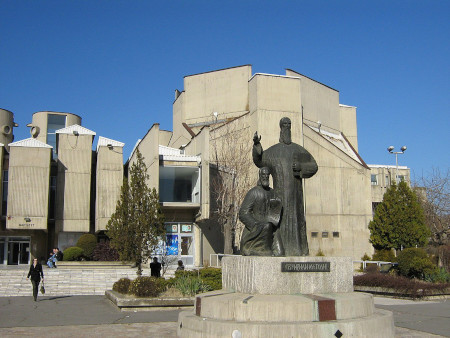

To honor the extraordinary life of Stoyan Christowe, and to uphold and keep alive his literary work, in 2010 the Macedonian Arts Council established The Stoyan Christowe Scholarship Fund.
The Macedonian Arts Council is in discussions with several institutions that played a major role in the shaping of Stoyan Christowe’s writing and political careers, for the purpose of establishing a permanent endowment fund through which each year one economically disadvantaged high school graduate in Macedonia will be selected to attend college at the Saints Cyril and Methodius University in the capitol, Skopje. The field of studies is limited to the two subjects that Stoyan Christowe was passionate about and excelled in:
The Endowment Fund will support four students, each in a different academic year and it will be managed, in perpetuity, by the US based education institution.